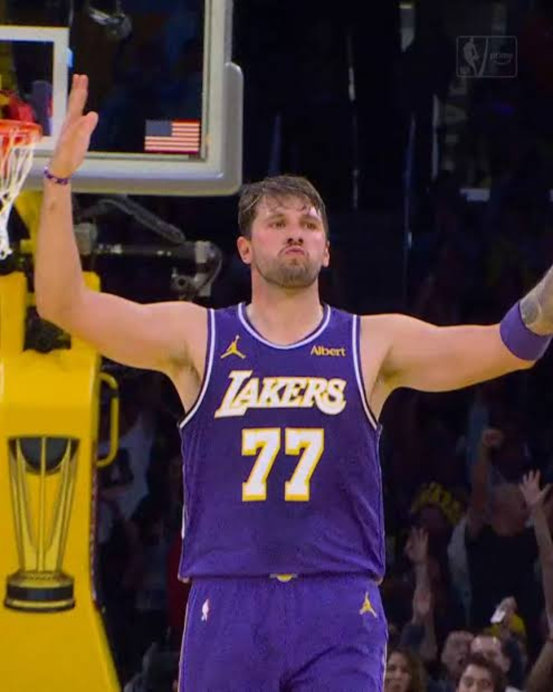
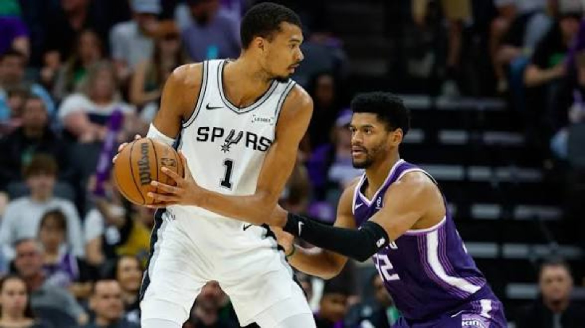
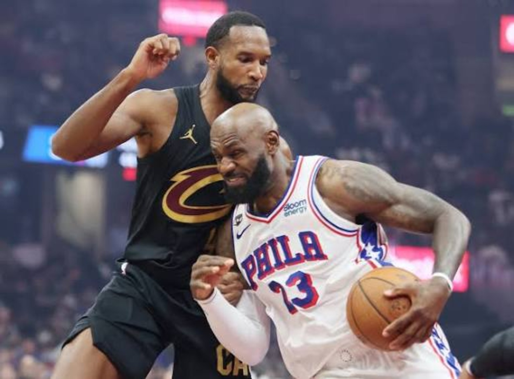
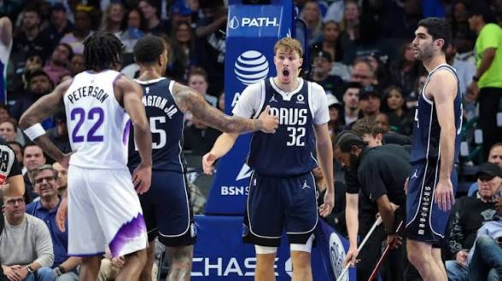
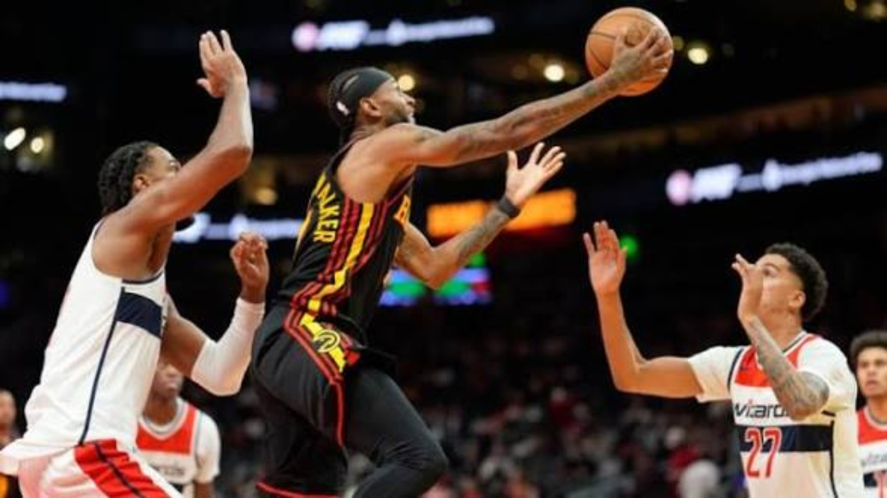

NBA Nightcap • Friday, November 6, 2026 • Nine games final
Luka Drops 53. Boston Sends a Message. The League Takes Notice.
A historic scoring eruption in Los Angeles, a Celtics demolition, a Spurs statement and a rookie showdown define an NBA Cup Friday full of early-season consequences.

Luka Dončić • 4DK Player of the Night
Player of the Night
Luka Dončić — 53 points
Five rebounds, five assists, 17-of-33 shooting. His fourth consecutive 40-point performance powered a 124–118 Lakers comeback over Portland. The Lakers trailed by as many as 16 before a 17–0 third-quarter run turned the game; Luka's late floater shut the door.
01 • Western Conference
LOS ANGELES LAKERS 124 — PORTLAND TRAIL BLAZERS 118
There is a difference between collecting points and taking possession of a game. Dončić did both. Los Angeles spent the first half fighting its own perimeter shooting, yet its star kept the deficit survivable, even hitting a spectacular shot from beyond half court before the break. The decisive adjustment came after halftime: pressure on Portland's ballhandlers generated turnovers and accelerated the Lakers' offense. A 17–0 run flipped the game and a 12-point advantage entering the fourth gave Los Angeles the cushion it needed.
Portland deserves credit for refusing to fold. Avdija's playmaking and Lillard's scoring kept the Blazers dangerous, and they cut the margin to four late. But 24 turnovers were too costly against a team with a scorer capable of punishing every extra possession. Luka's floater with under 30 seconds remaining was the closing statement. The early-season MVP conversation is unavoidable; the more important long-term test is whether the Lakers can sustain this level of defensive urgency without needing a 50-piece every night.
Boston didn't merely beat Charlotte; it removed competitive doubt almost immediately. A 40–20 first quarter became a 70–39 halftime advantage, with Tatum orchestrating as a scorer and distributor. The Celtics hit 24 threes, an NBA Cup record, while holding the Hornets below 30 percent from the field. That combination of volume shooting and defensive disruption makes for a brutally short night for an opponent.
Charlotte was depleted, so 4DK won't mistake this single result for proof Boston has solved every postseason question. But a team that wins the possession battle, spaces the floor and gets star-level direction from Tatum can build an elite regular-season résumé. Boston's 2–0 Cup start and commanding point differential matter in a format where margin can decide advancement.
03 • Western Conference
SAN ANTONIO SPURS 124 — SACRAMENTO KINGS 109
Wembanyama Sets the Standard

San Antonio • Wembanyama leads the charge
Leaders: Victor Wembanyama 30 PTS, 14 REB; Stephon Castle, Devin Vassell and Dylan Harper 19 PTS each. Sacramento: Darius Acuff Jr. 22 PTS, 8 AST; Domantas Sabonis 17 PTS, 12 REB.
Wembanyama needed only 26 minutes to impose his will. His 20 first-half points set the tone, and San Antonio's scorching early offense built a 75–56 halftime lead. Sacramento never brought the margin inside 12 after intermission. Just as notable as Wemby's production was the support: Castle, Vassell and Harper all reached 19, evidence that this offense doesn't have to live on one player's shoulders.
Seven consecutive wins make the Spurs a serious Power 30 discussion, not merely a fun young team. The Kings, meanwhile, are struggling to contain opponents and cannot afford to treat another double-digit defeat as an isolated stumble. Acuff's scoring and passing offer a developmental bright spot, but Sacramento's defensive baseline must rise.
04 • Eastern Conference
CLEVELAND CAVALIERS 119 — PHILADELPHIA 76ERS 95
Cleveland Exposes the Cracks

NBA action photography • Editorial illustration, not from this matchup
Philadelphia entered with the résumé of a front-runner, but Cleveland controlled the terms of this matchup. The Cavaliers won the opening quarter 33–22, absorbed a Sixers push that narrowed the deficit to two in the third, then answered emphatically to take a 17-point lead into the fourth. Mitchell's creation and Mobley's efficient scoring gave Cleveland multiple ways to punish a defense that couldn't string together stops.
The Sixers shot 10-for-40 from three, and their veterans couldn't generate enough reliable half-court offense. Edgecombe's aggressive second quarter and disruptive hands were genuine positives, but a 24-point defeat is a warning about how quickly perimeter inefficiency can overwhelm even a talented roster. Cleveland gets a credibility win; Philadelphia gets film it needs to confront, not excuse.
05 • Western Conference
DALLAS MAVERICKS 112 — UTAH JAZZ 100
Flagg Wins the First Chapter

Cooper Flagg and Darryn Peterson • Editorial illustration, not confirmed from this matchup
Leaders: P.J. Washington 26 PTS; Cooper Flagg 21 PTS, 10 REB, 7 AST, 3 STL; Morez Johnson Jr. 13 PTS, 17 REB. Utah: Lauri Markkanen 24 PTS; Darryn Peterson 21 PTS; Keyonte George 16 PTS, 9 AST.
The first Flagg–Peterson matchup was never just about which prospect scored more. Flagg influenced nearly every area of Dallas' win: 21 points, double-digit rebounds, seven assists and three steals. Peterson delivered 21 points in his own right, showing why Utah believes in his offensive ceiling, but Dallas controlled the decisive third quarter 32–19 and opened the fourth with seven straight points.
The Mavericks' physical advantage was enormous: 63–45 on the glass and 20–5 in second-chance scoring. Johnson's ten offensive boards were a game-changing contribution that won't dominate highlight packages. Utah's 21 turnovers erased the value of its superior three-point shooting. For 4DK's Rookie Watch, this is a meaningful early head-to-head marker, not a final verdict on either player's future.
Oklahoma City dismantled a Memphis team that had been generating early-season excitement. Mitchell's career-high 35 was the headline surprise, but this was a collective offensive clinic: the Thunder shot 55 percent and converted 18 Memphis turnovers into 30 points. By halftime, OKC had 71 points and a 22-point advantage. Its guards repeatedly turned defensive pressure into quick offense, preventing Memphis from settling into its preferred rhythm.
For the Grizzlies, the concern extends beyond one bad score. Their third consecutive defeat and Boozer's eight-point night highlight how difficult it is for a young core to respond when a disciplined opponent removes easy touches. Oklahoma City, even while managing roster health, showed the standard Memphis must reach to become a true conference threat.
07 • Eastern Conference
ATLANTA HAWKS 139 — WASHINGTON WIZARDS 132
Atlanta Survives Trae's Return

Atlanta and Washington • Hawks spotlight
Leaders: Nickeil Alexander-Walker 28 PTS; Luguentz Dort 25 PTS; Onyeka Okongwu 22 PTS, 10 REB; Dyson Daniels 13 PTS, 12 AST, 9 REB. Washington: Kyshawn George 33 PTS; Trae Young 23 PTS, 10 AST; Tre Johnson 23 PTS.
Trae Young's return to Atlanta carried the emotional weight, but the Hawks' emerging identity was the real story. Alexander-Walker supplied the leading scoring punch, Dort scored 20 after halftime and Daniels nearly completed a triple-double while organizing the offense. Atlanta's 38-point second and 39-point third built separation, though the Hawks' defense still left the door open.
Washington closed within one in the fourth and within three in the final seconds, but Atlanta converted its late free throws. Young's 23 and 10 demonstrated his creation ability; eight turnovers also reflected the price of trying to force the action. This was a win for Atlanta's depth and resilience, but surrendering 132 points remains a warning as the competition gets tougher.
Without Scottie Barnes and Immanuel Quickley, Toronto needed contributions from across the rotation. Barrett supplied dependable scoring, Martin erupted off the bench and Shead directed traffic with 16 assists. Milwaukee led 60–51 at halftime, but Toronto flipped the script with a 38-point third quarter and finished the fourth 32–20. The Raptors didn't simply get hot; they sustained better execution and defensive activity when the game tightened.
The Bucks received productive performances from Herro and rookie Burries, yet the inability to protect a nine-point halftime lead speaks to broader closing problems. Toronto's response offers a template for staying competitive through injuries; Milwaukee must find more consistent stops and late-game structure.
09 • Western Conference
MINNESOTA TIMBERWOLVES 115 — NEW ORLEANS PELICANS 109
The Timberwolves trailed entering the final quarter but produced 38 points in the fourth to steal control. Dejounte Murray's three put New Orleans up 89–87 with under eight minutes remaining. LaMelo Ball responded with five consecutive points, sparking a 10–2 Minnesota run that changed the game's direction for good. Dosunmu's 26 and McDaniels' two-way impact provided the foundation for that late push.
New Orleans had enough shotmaking to build a lead but couldn't finish possessions with the same discipline. Fears' 24 points were an encouraging sign for the young guard, while Williamson's 13 underscored a quiet night from a player the Pelicans need to command the paint. Minnesota's second straight NBA Cup group victory reinforces its ability to win close games even without its usual leading scorer.